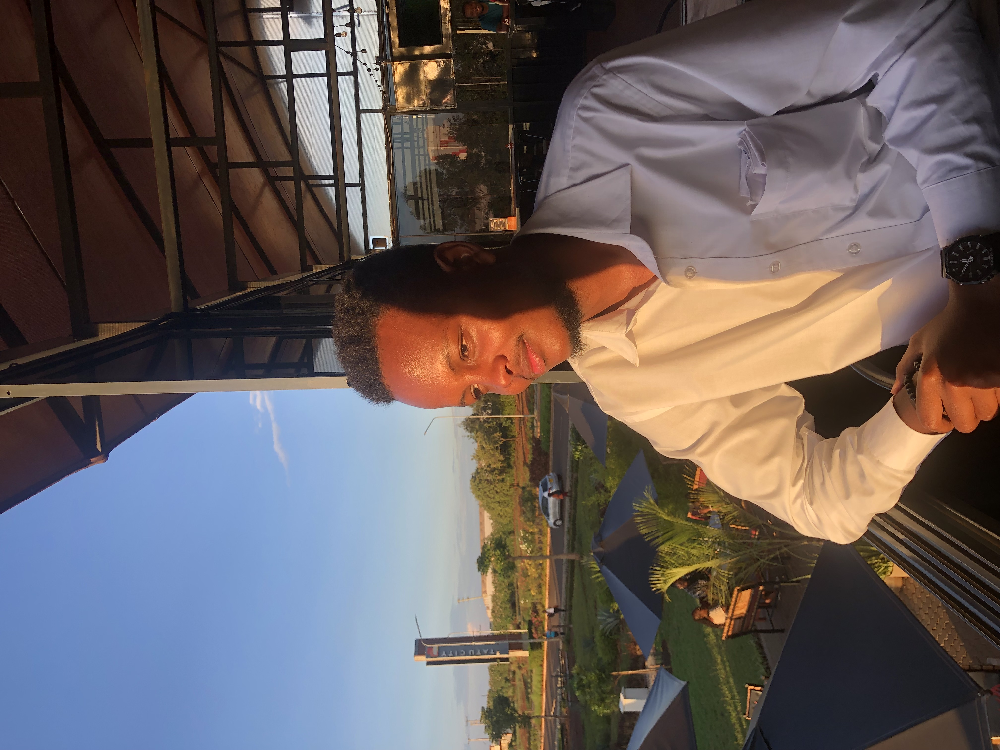

GIS | Environmental Analysis | Mapping Climate & Land Systems

An Environmentalist with a strong interest in geospatial analysis and environmental analysis. My work focuses on using GIS to analyze climate patterns, vegetation health, land use change, land surface temperature, and population distribution.
I use geospatial tools to transform environmental data into maps and insights that support sustainable planning and resource management.